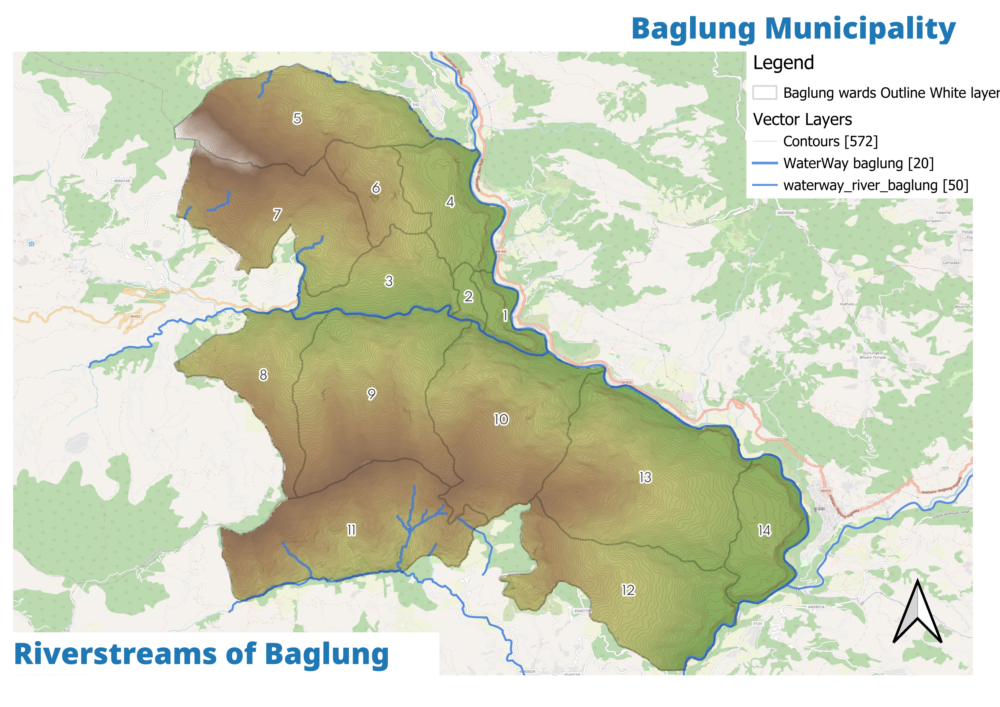

बागलुङ नगरपालिका · Baglung Municipality — Official Portal
The QGIS Studio archive turned into an interactive atlas — a 30 m SRTM elevation model, ward choropleth, the road network, ESA land cover, flood and landslide grids, and the final land-suitability surface.
Explore the municipality interactively. Use the layer chips below to switch overlays, the controls to toggle vectors, and click any feature for details. Base imagery via OSM, Esri and CARTO.
Rasters: DEM & hillshade EPSG:4326; landcover, suitability, flood & landslide reprojected to 4326 as styled PNG imageOverlays. Vectors from Baglung_Vectors.gpkg and ward/road shapefiles. Plan Explorer: Click a ward to trace the planning chain. Proposal layers only where data exists — no invented geometry.

The DEM reads the north–south fall from ~2,600 m ridges to the river bench — the fundamental constraint on where anything can go.

A multi-criteria weighted overlay scores every cell — flat terraces near the primary road score highest, steep flood-prone fans lowest.

The weighted flood grid (2.05–5.0) maps the Kali Gandaki and tributary corridors — the constraint on riverside expansion.

The landslide grid (1–4.28) flags steep, destabilised slopes — central to the DRR and embankment proposals.

875 segments from OSM — only 29.5 km blacktopped. The primary NH-03 is the spine; much else is trail or rural track.

ESA WorldCover: ~68% of valid pixels are tree — the classic Baglung hills, ahead of shrub, grass, cropland and built-up.